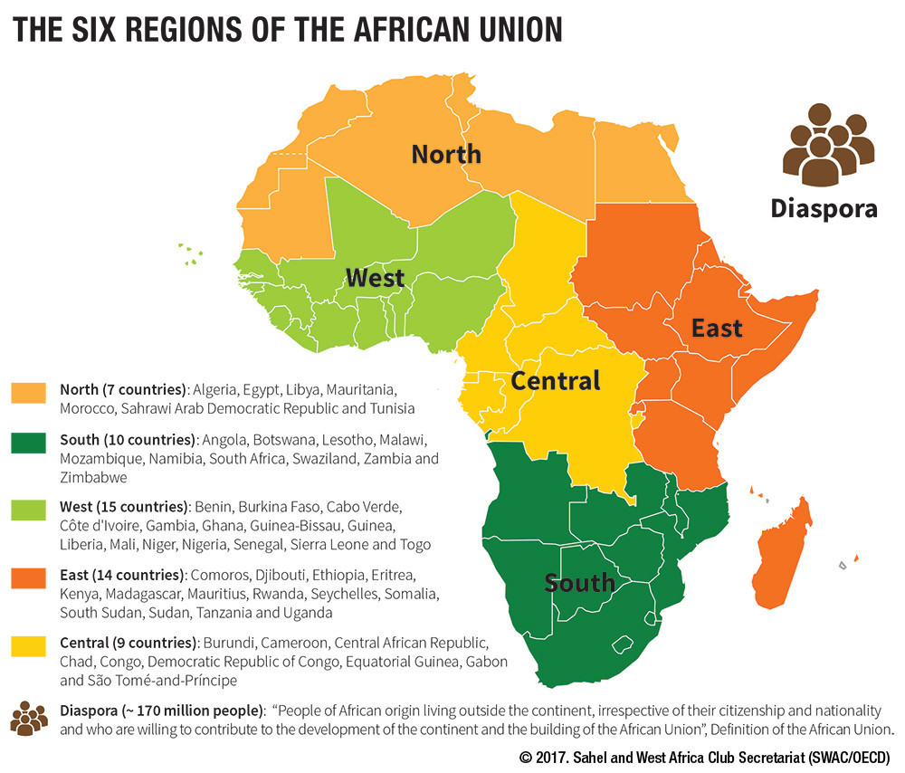

Africa is the world's second-largest continent, comprising 30.2 million square kilometers and accounting for around 20% of total land area. It is made up of 54 recognized countries and will be home to more than 1.4 billion people by 2024, making it the world's second most populated continent behind Asia. With over 2,000 languages spoken throughout its regions and hundreds of ethnic groupings, Africa is the continent with the greatest linguistic and cultural diversity. Geographically, it includes some of the world's most famous landscapes, such as the Sahara Desert (the world's biggest scorching desert), the Nile River (the world's longest river), and Mount Kilimanjaro, Africa's highest mountain. Economically, Africa is wealthy in natural resources such as oil, gold, diamonds, and cobalt.
North Africa, which includes Egypt, Libya, Tunisia, Algeria, Morocco, and occasionally Sudan and Western Sahara, is physically and culturally unique within the African continent. It has dry and semi-arid climates and is bounded by the Mediterranean Sea to the north and the Sahara Desert to the south, with the Nile River and the Atlas Mountains serving as significant geographical features. Over 200 million people live in the region, which is mostly occupied by Arab and Berber (Amazigh) ethnic groups. Arabic is the official language, but Berber dialects and French are also widely spoken in former colonial territory. Islam is the main religion in the area, influencing much of its cultural and social life. North Africa has a rich history, having been the birthplace of ancient civilizations such as Ancient Egypt and Carthage, as well as a hub of Islamic knowledge and trade. Economically, it is wealthy in natural resources like as oil and gas (particularly in Algeria and Libya), phosphates in Morocco, and expanding sectors in tourism and renewable energy.
East Africa is a varied and historically significant area on the African continent that includes Kenya, Tanzania, Uganda, Ethiopia, Somalia, Rwanda, Burundi, South Sudan, Eritrea, and Djibouti. The region is geographically defined by the Great Rift Valley, highlands, savannas, and some of Africa's greatest lakes, including Lake Victoria, Lake Tanganyika, and Lake Malawi. It is also home to Mount Kilimanjaro, the continent's highest summit. East Africa is commonly recognized as the cradle of humanity, according to the finding of early hominid fossils like Lucy in Ethiopia. With a population of over 400 million as of 2024, the region is culturally and linguistically varied, with hundreds of ethnic groups and languages, however Swahili and English are widely spoken in many nations. East Africa's economy includes a combination of agriculture (primarily tea, coffee, cattle, and horticultural exports) and rising industries like as tourism, services, and digital technology, notably in Kenya and Rwanda.
West Africa is a culturally and physically varied area of the African continent that includes 16 nations, including Nigeria, Ghana, Senegal, Côte d'Ivoire, Mali, and Burkina Faso. It is controlled regionally by the Economic Community of West African States (ECOWAS). The region includes coastal plains, savannas, and sections of the Sahara Desert, with important rivers such as the Niger and Volta providing critical infrastructure for agriculture, transportation, and electricity. West Africa, lead by Nigeria, the continent's most populated country, will have a population of more than 430 million by 2024, making it one of the world's most populous and fastest expanding areas. It is home to hundreds of ethnic groups and languages, with several nations using French, English, and Portuguese as official languages due to colonial legacy. The region's economy is centered on a combination of agricultural, mining, oil production, and the developing services and fintech sectors, with Nigeria, Ghana, and Côte d'Ivoire acting as significant economic hubs. Its natural richness includes gold, oil, cocoa, and bauxite.
Central Africa includes countries like the Democratic Republic of the Congo (DRC), Republic of the Congo, Central African Republic, Cameroon, Gabon, Equatorial Guinea, Chad, and São Tomé and Príncipe. The region is known for its tropical rainforests, biodiversity, and abundant natural resources. Geographically dominated by the Congo Basin—the world's second-largest rainforest after the Amazon—the region is home to Africa's second-longest river, which serves as a vital waterway for transportation and ecosystems. Central Africa's population is expected to exceed 180 million by 2024, with hundreds of native languages spoken alongside colonial languages like as French, Portuguese, and Spanish. The region is mineral-rich, particularly in the DRC, Gabon, and Equatorial Guinea. Agriculture and forestry are other important economic drivers in the region.
Southern Africa includes South Africa, Namibia, Botswana, Zimbabwe, Mozambique, Angola, Zambia, Lesotho, and Eswatini. It is distinguished by a diverse range of landforms, including deserts like the Kalahari and Namib, savannas, mountains like the Drakensberg, and a long coastline along the Atlantic and Indian Oceans. The region's population exceeds 70 million, with South Africa being the most populated and economically developed country. Mining has a substantial impact on the Southern African economy, with South Africa leading the world in gold, platinum, and diamond output, and Botswana and Namibia also playing important roles in diamond mining. Agriculture, tourism, and industry are all key areas.